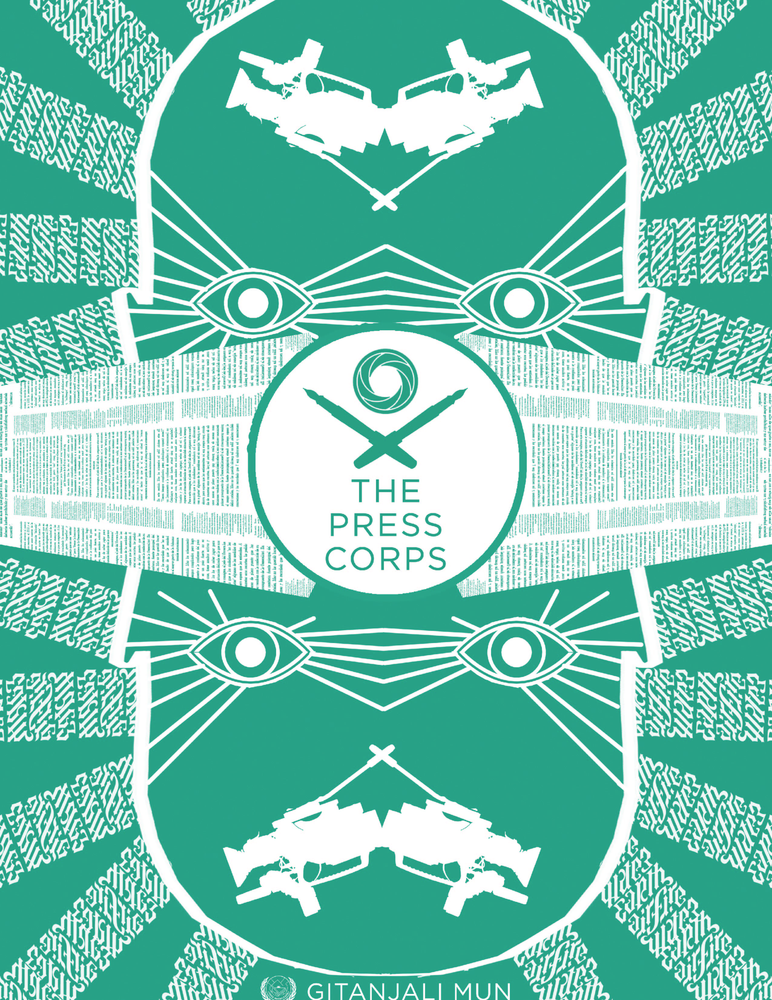
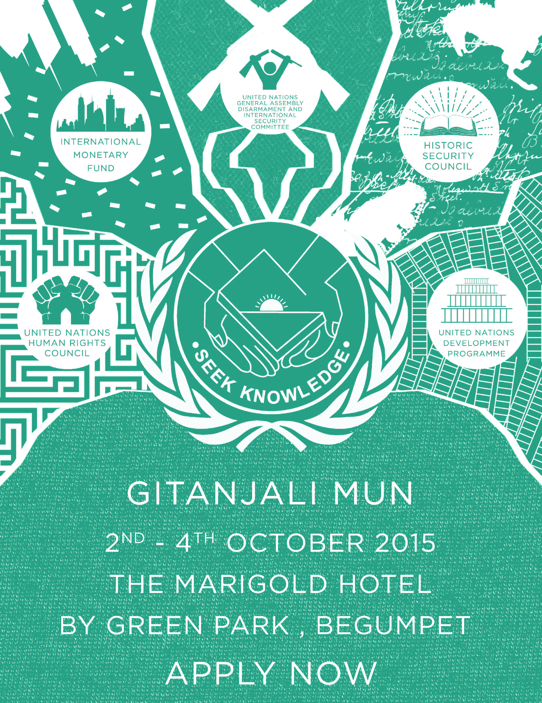

Campaign Release for Gitanjali
November 28 2018

Gitanjali Senior School is one of the premier educational institutions in Hyderabad, India. In 2015, the school decided to enter the arena of Model United Nations conferences. These are large scale undertakings that span numerous days, and attract students from all over the city in an effort to simulate the debate and politics of the United Nations.
 We were asked to create promotional material for this event. They wanted to attach a sense of prestige, and uniqueness to the Gitanjali MUN brand. As with the United Nations, there are various committees and each has an agenda to resolve. I created a unique identity for each, with art related to the issues they aimed to resolve.